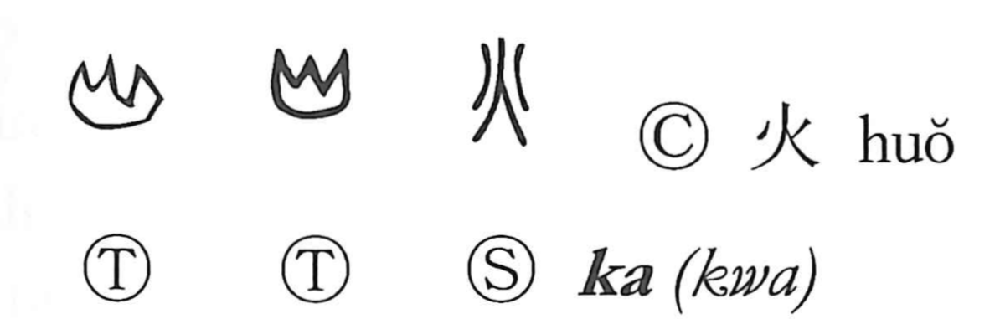

火

Kun: hi, ho | On: ka
fire ・ flame
Explanation
A pictograph of a flaring blaze, 火 first portrayed the full body of flame, later stylized into tongues and sparks streaming upward. When doubled it becomes 炎, “flames.” The Sino-Japanese reading ka likely echoes the crackling, hissing sound of fierce burning—ancient texts even render the sudden outbreak of fire with onomatopoetic graphs. Related characters elaborate the theme: 燬 names destruction burned to the ground, while 災 sets the “streams” sign 巛 over fire to show the twin calamities of flood and fire, as in the pairing 水火 for mortal perils.